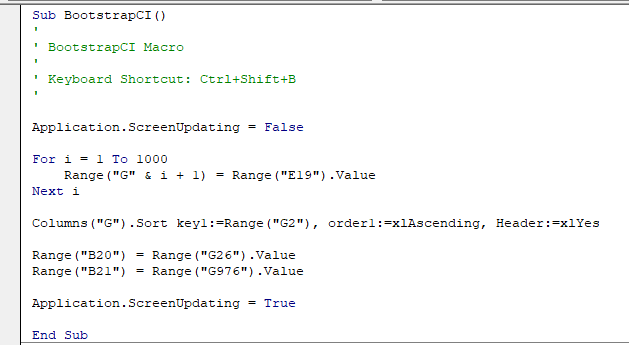
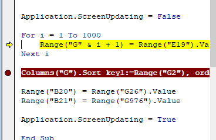
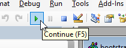

Bootstrapping confidence intervals
Another resampling technique that is used commonly in the biological sciences is bootstrapping. The bootstrap can be used in a very similar fashion to randomization testing, but it is also a suitable method for calculating confidence intervals. The procedure you've learned in introductory biostatistics was first developed by Jerzy Neyman and Karl Pearson in the 1930's, and uses the formula:
x̄ ± t sx̄
where x̄ is the sample mean, t is a critical value obtained from a t-distribution, and sx̄ is the standard error. The product t sx̄ is called the "uncertainty" of the estimate of x̄, and the upper limit is thus the uncertainty added to x̄, and the lower limit is the uncertainty subtracted from x̄.
This simple procedure works fine in many cases, but not always. Bootstrapping works fine in cases where the Neyman-Pearson method is appropriate, but also works well in cases where Neyman-Pearson fails. We'll focus on a case today where either could be used, and will move on next time to a case where bootstrapping is a much better alternative.
The most important difference between bootstrapping and the randomization testing procedure we used previously is that bootstrapping involves resampling from our data with replacement. This means that in each iteration we can include some observations more than once, and not include others at all. The sample of randomly selected data points is the "bootstrap sample" for that iteration. The VBA code we write will be very similar to last week's randomization test macro, in that we'll take our recorded macro and modify it to loop through the operations 1,000 times and record an observed statistic each time through. But, the setup in Excel will be quite different because we won't be able to simply shuffle the data by sorting on a column of random numbers. Instead, we will use a method that will allow us to randomly select a bootstrap sample with replacement from our observed data each iteration.
If you're curious, the "bootstrap" was one of the earliest applications of computationally intensive methods in statistics. It was a very different approach than traditional methods of working with analytical equations to derive formulas for confidence intervals. Since it was a novel method of solving some particularly thorny statistical problems, the developers of the method likened it to pulling yourself up by your bootstraps when everything else you've tried has failed. Thus the name.
Bootstrapping in Excel
Step 1. Download this file and save it where you're saving class files.
Open the file and you'll find that the first sheet, SockeyeColor, has the data for skin color of sockeye salmon that we worked with last time (we won't worry about the kokanee this time).
The first column is an ID number that we'll use in our bootstrapping to make random selection easy. The data for skin color are in column B, and the mean for the 16 measurements is in cell B19. It is this mean we will be finding a 95% confidence interval for.
Step 2. Generate random sockeye numbers.
The way we will select our bootstrap sample is to generate sockeye numbers at random that will match the numbers in column A.
- In cell D1 type "Random salmon number". There are 16 sockeye in the sample, so each of our bootstrap samples should have 16 skin colors in it.
- In cell D2 enter the formula =randbetween(1,16) - this will generate a random salmon number.
- Copy and paste D2 to the rest of the cells, D3 through D17 - this will generate 16 random salmon numbers, equal to the number of measurements in the data set. Since each number is being independently generated, some will repeat and some numbers between 1 and 16 won't occur - if you look at the numbers generated you'll see some duplication. If you type F9 to recalculate the worksheet, you'll see that a new set of random salmon numbers are selected each time.
This selects the salmon numbers in our bootstrap sample, now we need to use these to get the skin color measurements.
Step 3. Select skin colors for the bootstrap sample.
To get the skin color measurements for the randomly selected salmon:
- In cell E1 type "Bootstrap sample".
- In cell E2, type the function =lookup(d2, a$2:a$17, b$2:b$17) - this looks up the salmon number from A2 to A17, and returns the skin color from B2 to B17. Since we've used absolute references to the rows we can copy and paste this to the rest of the rows to get the skin colors for every randomly selected salmon number.
- Copy E2 and paste it to E3 through E17
You now generate a bootstrap sample of skin colors each time the sheet recalculates. Double check that skin colors in the bootstrap sample match the random salmon numbers (that is, if the random salmon number is 1 you get a color of 0.98 returned for it).
Note that we're using a column to randomly generate the numbers, and another to return the skin color data. To make this more compact would could replace d2 in the lookup() function with randbetween(1,16), and we would only need one column to generate the bootstrap sample - in other words, if we used =lookup(randbetween(1,16), A$2:A$17, B$2:B$17) we could get our skin color for a randomly selected salmon in a single cell. We didn't do it that way to make the program easier to debug - we can see that the random numbers are being generated correctly, and that the correct skin colors are being returned. If we put the random numbers into the lookup() function we would get only the skin colors, and wouldn't be able to tell which salmon was being selected, or whether the right values were being returned for the random salmon number generated. Separating them makes the spreadsheet a little more complicated, but makes errors easier to spot.
Step 4. Calculate the mean of the bootstrap sample.
Label the mean for the bootstrap sample in D19, and calculate it in E19.
The mean of the bootstrap sample changes every time a new random sample is selected, and we will record this mean each for each of the 1000 iterations we use in our program.
Step 5. Name a column to receive means of repeated bootstrap samples.
In G1 type "Bootstrap means".
At this point your sheet should look like this - don't be concerned if the bootstrap sample is different, it's a random selection from the data and no two will be alike.
Step 6. Write the macro.
To get to the VBA macro editor we need to enable a new tab on our ribbon...
- Hover over any of the tabs (Home is good), right-click, and select "Customize the Ribbon"
- In the Excel Options window, with Customize Ribbon selected, you'll see two sets of controls - in the "Customize the Ribbon" controls on the right, find the "Developer" tab and check the box to enable it
- Click "OK"
You should now have a new tab called "Developer" in the ribbon ("developer" refers to software developer, aka programmer).
If you switch to the Developer tab the button on the far left says "Visual Basic" - click on this to open the VBA editor.
The scripts we write are functions that perform specific tasks, which Visual Basic calls subroutines. It is possible to have more than one subroutine needed to perform a task. Scripts can be associated with a specific worksheet (in which case the cell references are assumed to apply to that worksheet, regardless of which sheet is active when the script is run), to the workbook (in which case the references are assumed to apply to the active sheet of the workbook), or they can be part of a module (which will work with whatever the currently active workbook and worksheet is).
We will put our scripts into a single Module for this exercise - select Insert → Module and you'll see that a Modules folder has appeared, with Module1 listed within it. Double-click on Module1 to make sure it's open and activated, and you can write your code in the blank editor window that opens up.
Before writing code, let's write the set of steps that need to be accomplished by this macro - this is called "pseudo-code", in that it lays out the way that the program will work, but uses natural language instead of computer code. Once we know what we want to do it's much easier to write a program to do it. To get a bootstrap confidence interval we need to:
- Copy the mean of the bootstrap sample from cell E19 and paste it into the next cell in column G
- Repeat 1000 times
- Sort the bootstrap means in column G from smallest to largest
- Find the 25th bootstrap mean and enter it in cell B20
- Find the 975th bootstrap mean and enter it in cell B21
That's actually it - Excel recalculates when you enter a value in a cell, so writing entering the bootstrap mean into a cell in column G causes a new set of random salmon numbers to be generated, and the mean is calculated for them each time.
The program that does this looks like this:

Write this into your blank module. What does it do? One row at a time...
- Sub BootstrapCI() - this starts the function we are writing, and gives it a name. The name must have open and close parentheses after it, with no spaces, and can't have certain special characters, but letters and numbers are fine. Using a name that suggests what the function does is a good idea. Every Sub is accompanied by an End Sub that completes the program, which you'll see is the last line.
- The next five lines in green are comments - they start with an apostrophe, which in VBA indicates that everything to the right is a comment that should be ignored. The BootstrapCI Macro line is just a (admittedly very brief) description of what this function does.
- One exception to the rule that comments are ignored by Excel...the Keyboard Shortcut: line is actually used, in that it defines the key combination you can use to execute the function. If you run the function any other way it's ignored, but Excel does make note of the key combination and runs the program if you use it.
- Application.ScreenUpdating = False - this turns off the visual feedback every time a new entry is made. This is really slow, and if you have Excel update the screen every time a new bootstrap sample is generated it will take ten times longer for the program to run. We turn it off at the beginning of the program and turn it back on at the end.
- The loop that does most of the work is in the next three lines of code - it is a For...Next loop, meaning that it executes as many times as we specify in the For line. Specifically:
- For i = 1 to 1000 - this starts the loop, and tells it to repeat (i.e. iterate) 1000 times, and to use a variable called i to store the current iteration
- Range("G" & i + 1) = Range("E19").Value - this takes the numeric value for the mean of our bootstrap sample in E19 and enters it into a cell in column G, with the row equal to i + 1. Since i is increasing by 1 each time we run through the loop this causes each bootstrap sample mean to be entered in the next cell down from the previous one each time we iterate through the loop.
- Next i - this increases i by 1, and sends us back to the start of the loop for the next iteration.
- Columns("G").Sort - once the loop is completed we will have 1000 bootstrap means in column G, and we need to sort them from smallest to largest. The sort command specifies the columns to sort, and then uses the .Sort "method" (which is an operation that columns know how to perform, which is specified by a period followed by the name of the operation) to sort the column. Everything that follows is an argument that tells the sort method how to sort the data:
- key1:=Range("G2") - it's possible to sort on more than one column, but we're just sorting on one, so we specify the sort "key" with the first row of data in the column we'll sort by (if we were going to sort on both column G and column H we would have a key2 argument as well)
- order1:=xlAscending - sort the data in G in ascending order
- Header:=xlYes - the first row of column G should be used as text labels, and not sorted in with the data values
- Range("B20") = Range("G26").Value - once the data are sorted the 25th largest bootstrap mean is in cell G26 (since the first row is a label, not a data value), so we assign the value of the contents of G26 to cell B20. We could select, copy, and paste-special the value to B20, the way we would if we were doing this by hand, but it isn't necessary - assigning the value this way is much faster.
- Range("B21") = Range("G976").Value - same idea, but this time we're recording the value of cell G976 (which has the 975th largest bootstrap mean) to cell B21
- Application.ScreenUpdating = True - turn screen updating back on so that Excel will work as expected after the BootstrapCI() is done
- End Sub - indicates that the function is complete
And that's all there is to it! Save your work!
Step 7. Debug.
Put the SockeyeColor sheet and VBA code window side by side so that you can see both - you need to be able to see column G, where the bootstrap means are recorded, as well as the VBA window for this to be useful to you.
Once you can see both the macro and the worksheet, select the VBA code window to activate it and hit F8 repeatedly to step through the commands in the macro. You should see that each time you run through the loop a new bootstrap mean is entered in the next row of column G, below the previous one.
Running through all 1000 of the runs through the loop by hitting F8 is a little tedious, so once you're sure it's working you can add a break point to the code window, like so:

The red dot in the gray band on the left side of the window is the breakpoint - enter it by clicking next to the Columns("G" & i+1).Sort line where the red dot appears in my example. You can now click the Continue button:

This will cause the program to run normally until it hits your break point, and then it will pause. We've paused at the sorting step, so if you hit F8 again you'll see that the values in G are now in ascending order.
With only a few more lines to go you can step through the rest of them with F8, and the 25th and 975th means will be entered into B20 and B21, respectively, and our 95% CI bootstrap is completed.
Click on the red dot to remove the breakpoint so that the program will run without interruption.
Step 8. Run the macro.
Once you've debugged and are sure that everything is running correctly, switch to your SockeyeColor sheet and type ctrl+shift+B. When it finishes you'll have 1000 bootstrap means in column G. It should only take a few seconds to run.
If it doesn't run, switch to the View tab, and in the Macros menu select "View Macros". Then select the BootstrapCI macro from the list, and click the "Options..." button. Click into the box in the "Shortcut Key" option, hold down the Shift key and enter a B. You should now see Ctrl+Shift+B as the shortcut key for the macro. Click OK, click "Cancel" to close the macro editor window, and then try running the macro again.